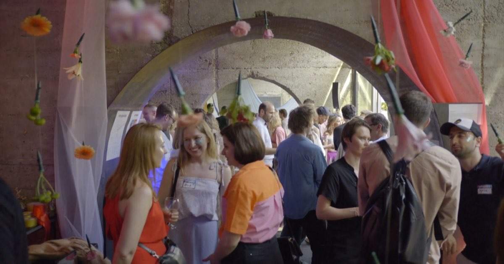
Anna Katsur
Uzory festScroll
introduction
Anna Katsur paints the moment before something happens. Her places do not exist: she builds them from memory, from the cities she has lived in and the ones she has left. The scenes are still, but they are rarely calm.
selected paintingsshown to scale relative to each other
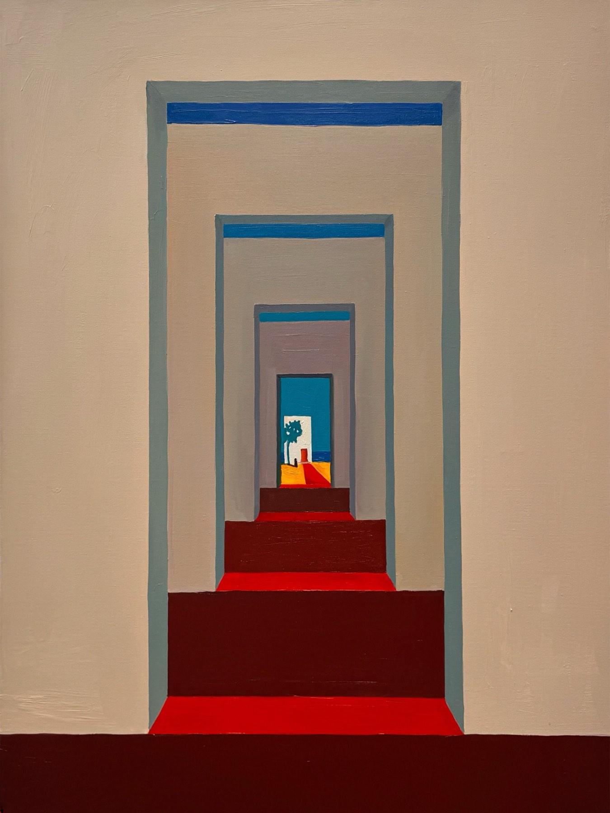
oil on canvas · 90 × 120 cm
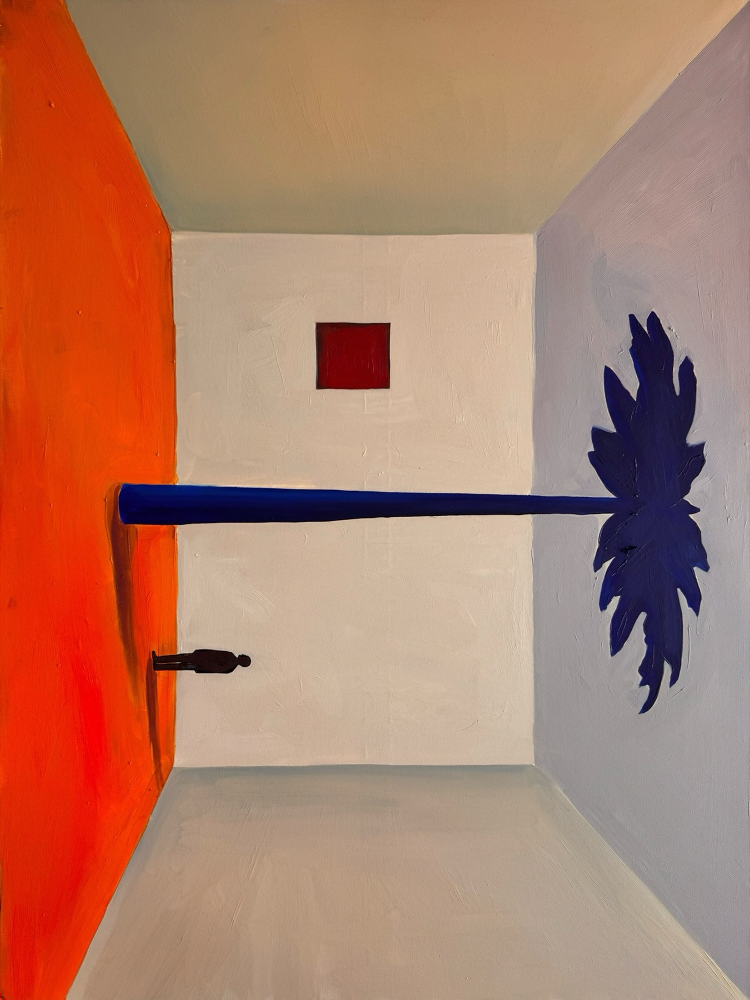
oil on canvas · 120 × 90 cm

oil on canvas · 152 × 101 cm
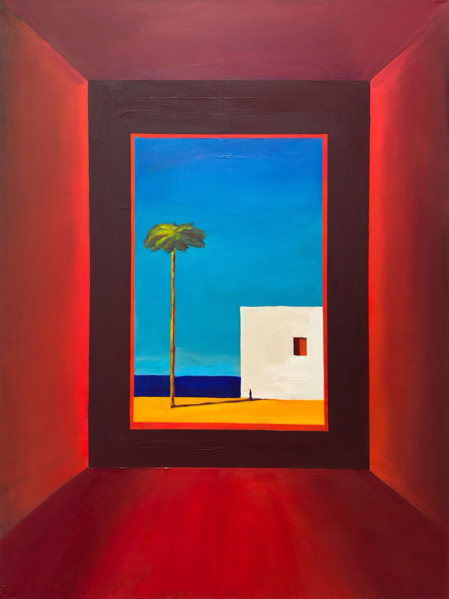
oil on canvas · 90 × 120 cm

oil on canvas · 40 × 40 cm

oil on canvas · 60 × 40 cm
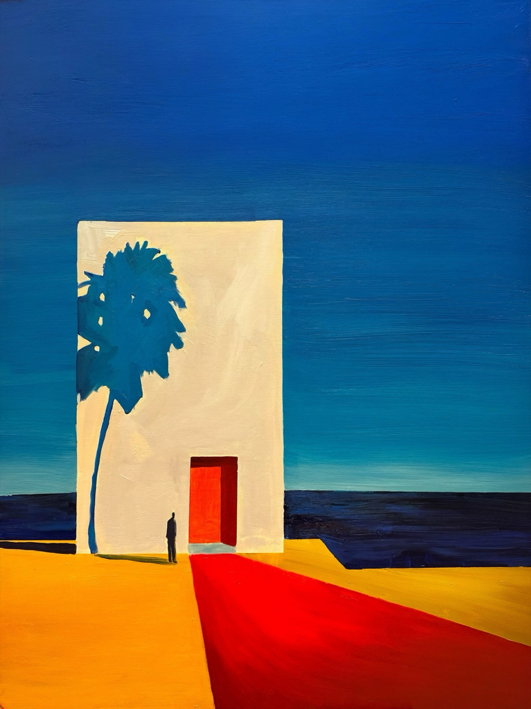
oil on canvas · 90 × 120 cm

oil on canvas · 152 × 101 cm
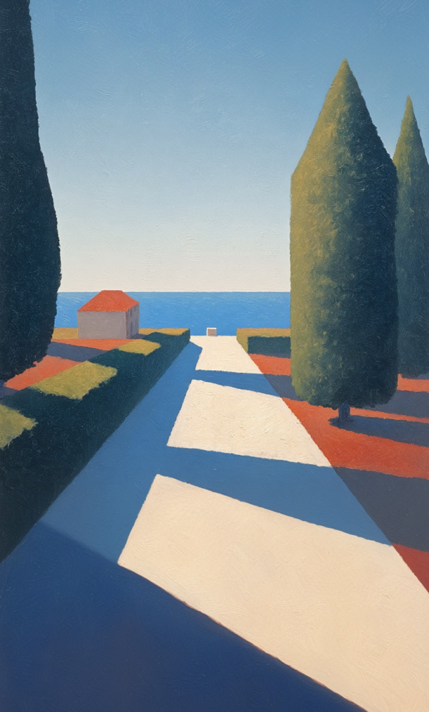
oil on canvas · 70 × 100 cm

oil on canvas · 152 × 101 cm
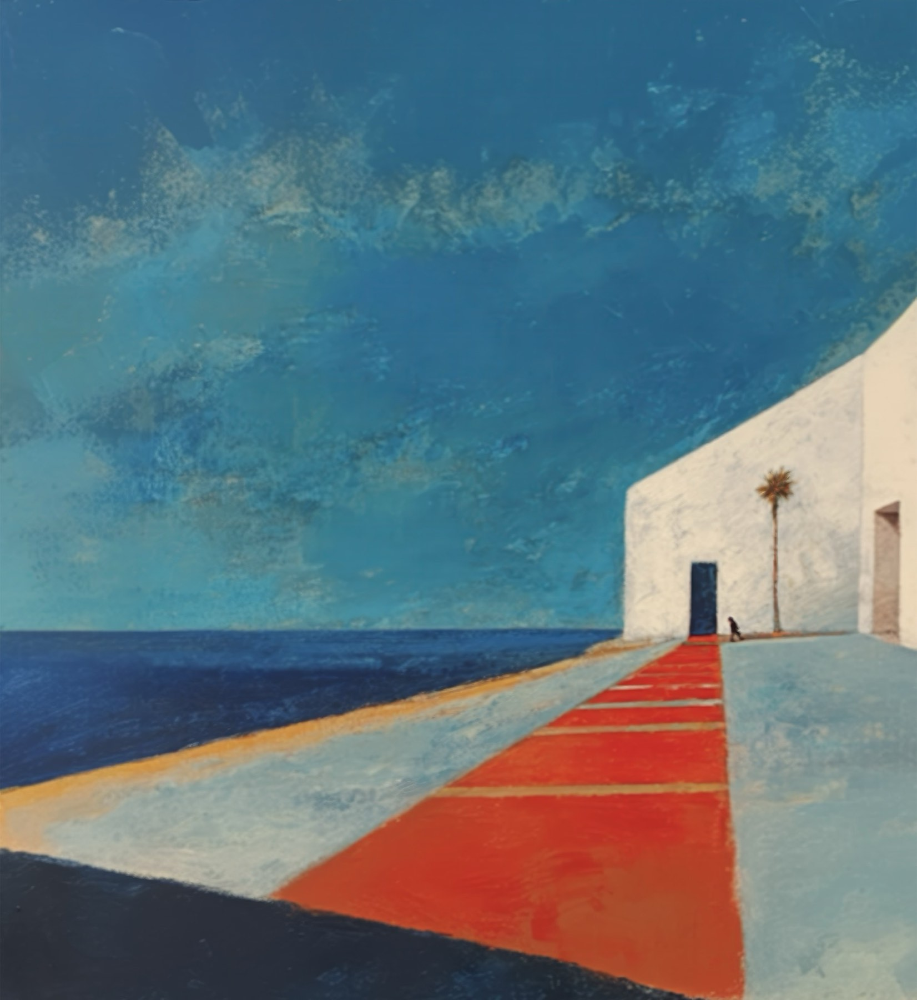
oil on canvas · 100 × 90 cm

oil on canvas · 140 × 100 cm

oil on canvas · 60 × 90 cm
← drag along the wall →view all paintings →
studioprocess
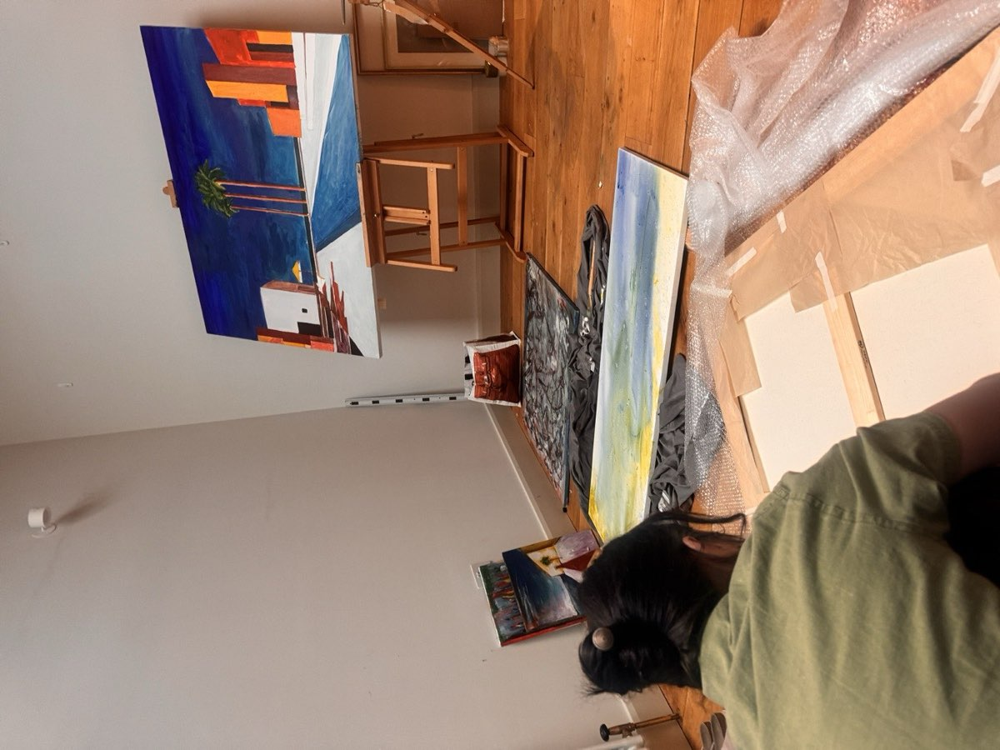
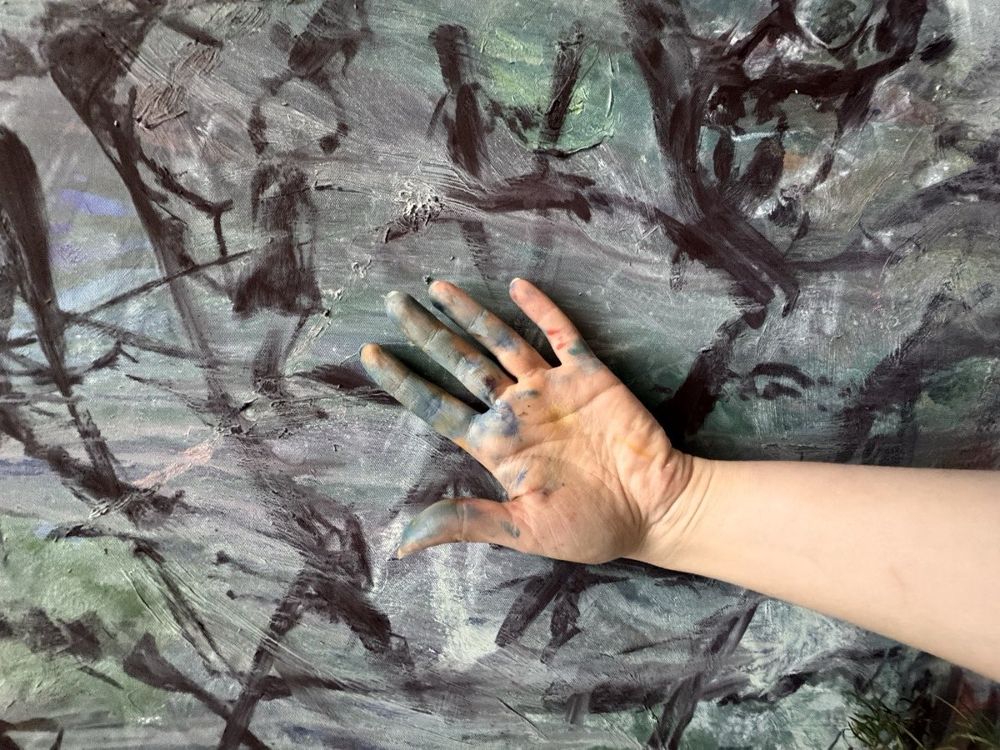
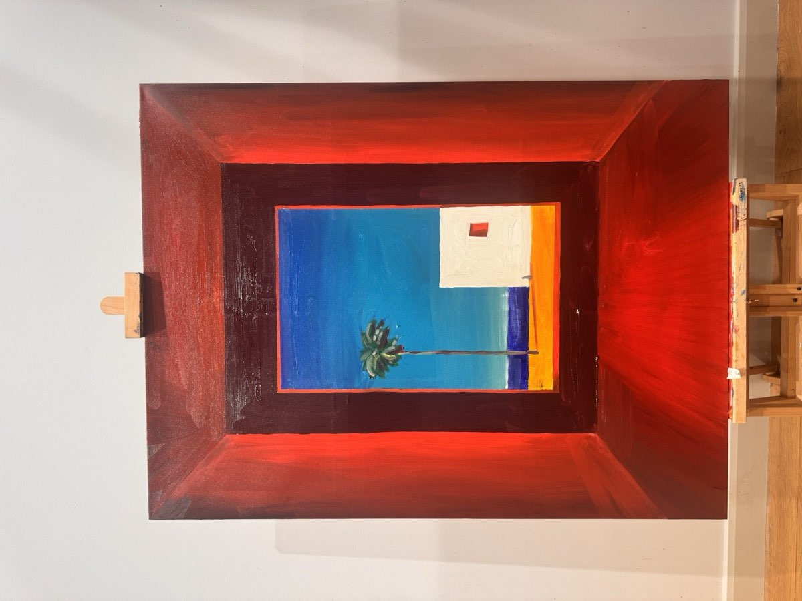
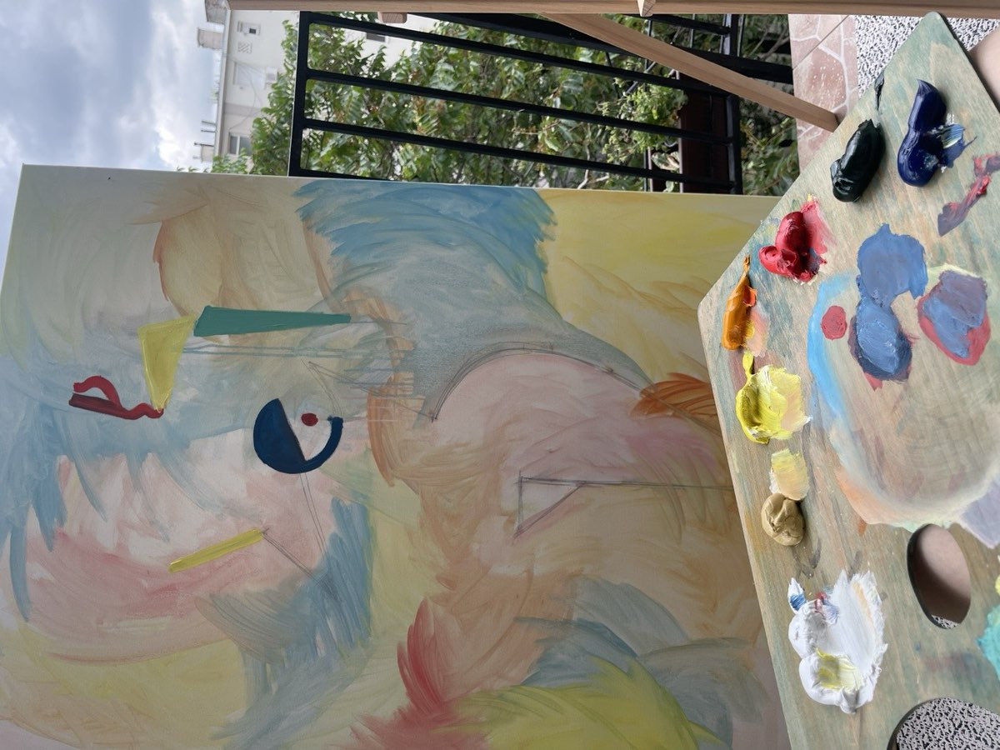
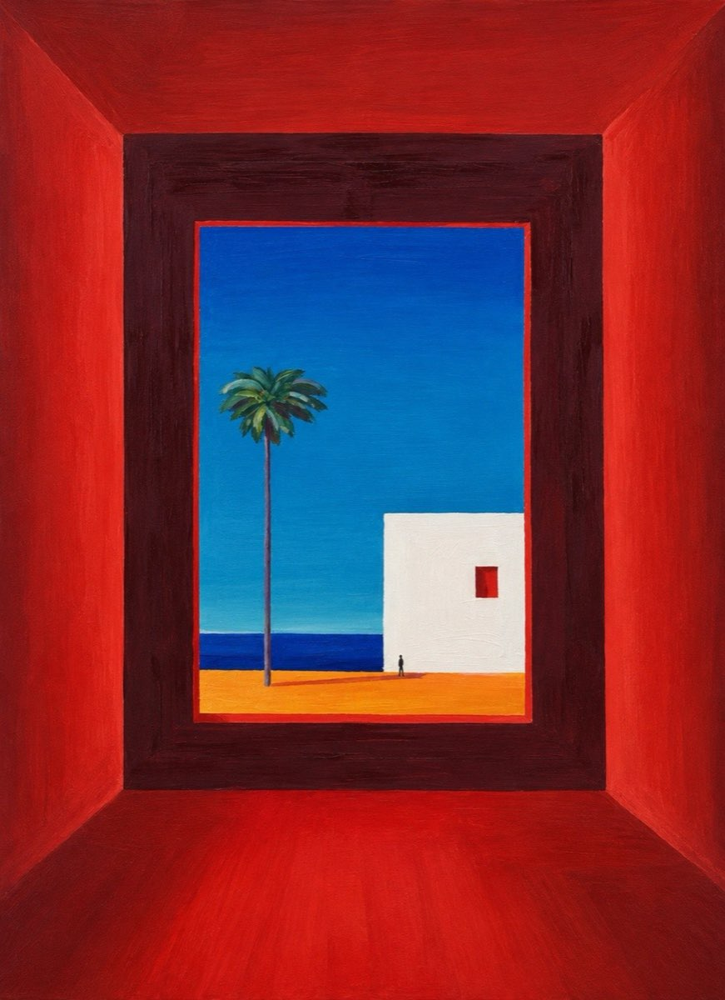
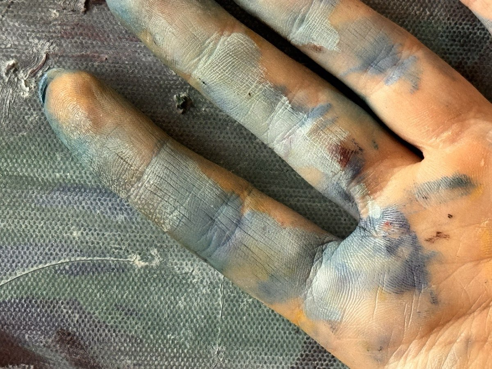
artist statement
“I paint pauses.”
the series2021–2026 · oil on canvas · {TOTAL} paintings
Nothing Significant
Happens Here
Doors, empty roads and shorelines, each with one small figure between leaving and arriving. The series is about waiting, and about what changes while we wait.
exhibitionsselected
- The Geography of BecomingHackney Downs Studios · London · 12.11–04.12.2026 · group exhibition→
- 77th Annual Summer ExhibitionChelsea Art Society · London · 2026 · group exhibition→
- Huge GalleryLondon · 2026 · group exhibition→
- The Route Forwardwith Inessa Garder · Hackney Downs Studios · London · January 2026→
- Who Am I?international exhibition · Hackney Wick · London · 2024→
- IllusoryBelgrade · 2023 · solo exhibition→
- 2026The Geography of Becoming · Hackney Downs Studios · Londongroup
- 2026Soho Open · GPS Gallery, Soho · Londongroup
- 202677th Annual Summer Exhibition · Chelsea Art Society · Londongroup
- 2026Huge Gallery · Huge Gallery · Londongroup
- 2026The Route Forward, with Inessa Garder · Hackney Downs Studios · Londonduo
- 2024Who Am I?, international exhibition · Hackney Wick · Londongroup
- 2023The Wrong Biennale · Barcelonagroup
- 2023Contemporary Artists, FuterGo Summit · Istanbulgroup
- 2023Awakening · Yerevangroup
- 2023Illusory · Belgradesolo
- 2019Installation for the Golden Mask theatre season · Moscowinstallation
- 2010Art of the Future · Zelenograd Cultural Centre · Moscowgroup
- 2009New Watercolour · Kirov City Library · Kirovgroup
artist